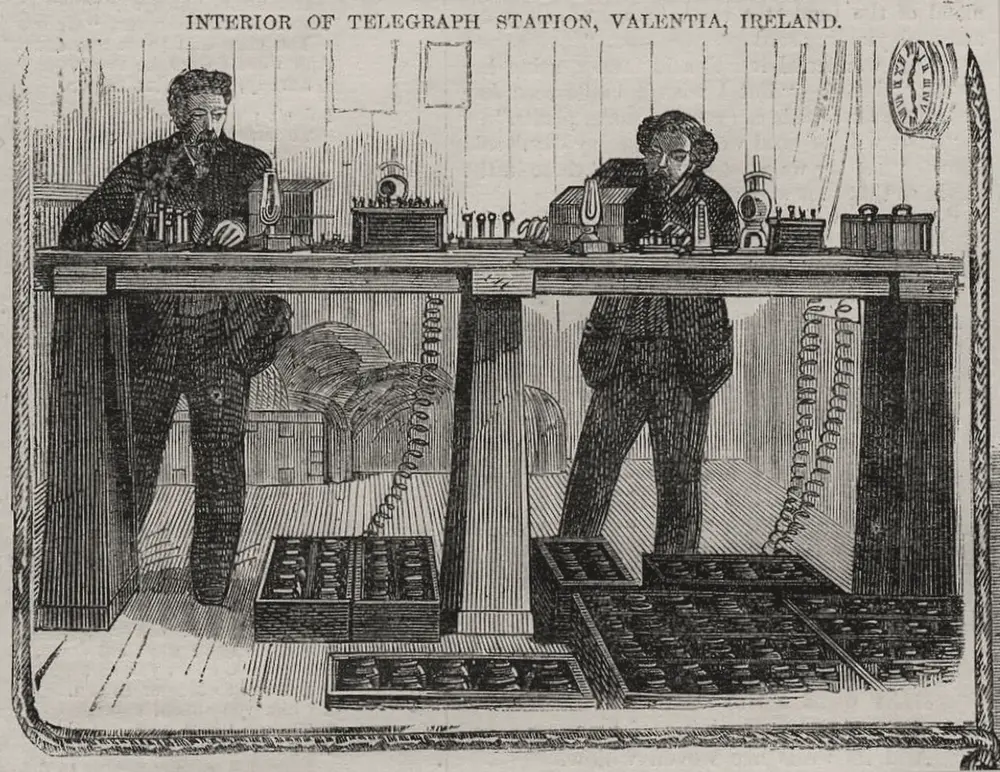

· Edición 17 · 5 min de lectura
La semana en limpio · 28 de septiembre al 3 de octubre

Grabado de Harper's Weekly, 1865, firmado con iniciales · Dominio público, vía Wikimedia Commons
Seguimiento: el gas, cinco días con la llave a medias
En pocas palabras. La planta de Cartagena que recibe el gas de afuera se dañó. Durante cinco días hubo racionamiento: primero las casas, después las fábricas. Ya se arregló, pero mostró cuánto depende el país de una sola puerta.
Qué cambió. Piense en una casa con una sola puerta. Si se traba, nadie entra. Eso pasó con SPEC, la planta de Cartagena que recibe el gas en barco, frío y líquido, y lo vuelve gas otra vez. El 25 de septiembre tuvo una falla técnica, y el Ministerio de Minas ordenó un racionamiento.
- Primero: hogares, hospitales, colegios y transporte masivo recibieron todo el gas que pidieron.
- Al final de la fila: industrias y comercios.
- El cierre: el racionamiento terminó a las 11:59 de la noche del 29 de septiembre. La planta volvió a su capacidad completa.
Qué sigue abierto. De cada 100 unidades de gas que usó el país en agosto, 34 llegaron de afuera, y casi todas entran por esa puerta. La segunda, en el Pacífico, se espera para finales de 2026, según la prensa. Mientras tanto viene El Niño, la temporada seca: el Ideam ha dicho que se sigue fortaleciendo. Con los ríos bajos, las plantas térmicas queman más gas para producir luz. Y de los nuevos contratos para buscar gas que anunció el Gobierno el 25 de septiembre no encontramos ninguno firmado.
Seguimiento: FMI y presupuesto, ahora con fechas
En pocas palabras. Colombia sigue hablando con el Fondo Monetario Internacional, pero no hay préstamo. Lo que sí hay son fechas: el presupuesto de 2027 se vota entre el 13 y el 15 de octubre.
Qué cambió. Después de su visita a Bogotá, Nigel Clarke, el número dos del FMI, pidió una acción "oportuna y creíble" para cerrar el hueco entre lo que el Estado gasta y lo que recibe. El Ministerio de Hacienda anunció que un equipo técnico viaja a Washington esta semana para seguir la conversación.
Conversar no es firmar. Y la línea de crédito flexible, la más fácil de usar, ya no está: Colombia la canceló en 2025.
Además, el Congreso puso fechas al presupuesto de 2027, que suma 634,9 billones de pesos:
- Del 13 al 15 de octubre: votan las plenarias de Senado y Cámara.
- Del 16 al 19: si los dos aprueban textos distintos, se concilian.
- El 20: es el límite. Si no hay ley, el Gobierno lo expide por decreto.
Qué sigue abierto. De cada 100 pesos de ese presupuesto, unos 24 se van en pagar deuda. El presupuesto es donde se notará si hay ajuste o no. Todavía no se sabe qué apoyo pedirá el Gobierno ni con qué condiciones.
Seguimiento: Fondo Milagro, un fondo con nombre y sin caja
En pocas palabras. Casi dos meses después del terremoto, el Fondo Milagro todavía no ha girado un peso. Le falta firmar el contrato que lo hace existir.
Qué cambió. Es como abrir una cuenta para recibir ayudas sin que el banco haya firmado los papeles. Así lo dice la respuesta del Ministerio de Hacienda, del 30 de septiembre, a un derecho de petición de la representante Catherine Juvinao, que publicó la revista Cambio:
- La fiducia no se ha firmado. La fiducia es el contrato con la entidad financiera que administra la plata. Sin ella, el fondo no está completo.
- Sin junta formal. Tampoco puede instalarse la junta, ni el gerente ejercer del todo.
- Sin manual. No existía ni un borrador de las reglas para contratar.
- Sin giros. De los 624.600 millones de pesos asignados a las regiones afectadas, no se ha transferido nada.
Qué sigue abierto. Los 2,7 billones que el Gobierno pidió para el fondo siguen sin votación en el Congreso. El mismo proyecto trae los 1,2 billones para la deuda de Air-e, la empresa de luz del Caribe, que también esperan. La Corte Constitucional sigue sin fecha para decidir si la emergencia es constitucional. Y la auditoría internacional depende de una junta que aún no se ha instalado.
Seguimiento: salario mínimo, arrancó la mesa
En pocas palabras. La negociación del salario mínimo de 2027 empezó antes de lo que dijimos. Ya tiene fechas.
Qué cambió. El 1 de octubre, el Ministerio del Trabajo reunió a la Comisión de Concertación: Gobierno, gremios y centrales obreras. Acordaron un comité técnico y dos fechas:
- El 9 de octubre: plazo para mandar propuestas.
- El 13 de octubre: nueva reunión para revisarlas.
Por ley, la comisión tiene hasta el 15 de diciembre para ponerse de acuerdo. Si no lo logra, el Gobierno fija el mínimo por decreto antes del 30. Al 2 de octubre, el Gobierno no había dicho una cifra.
Qué sigue abierto. De cada 100 trabajadores, 55 no tienen aportes a salud ni a pensión. Cada punto de aumento le sube el ingreso a quien tiene contrato y el costo a quien quiere contratar. La pregunta de la mesa es cuánto subirlo sin empujar a más gente a la informalidad.
Quién decide y cuándo
Quién decide. El Congreso, el presupuesto de 2027 y los 3,9 billones del Fondo Milagro y Air-e. Hacienda, con el FMI, el tipo de apoyo. La Comisión de Concertación, o el Gobierno, el salario mínimo.
Cuándo. El 9 y el 13 de octubre, propuestas y reunión del mínimo. Del 13 al 15, votación del presupuesto, con plazo hasta el 20. El proyecto del Fondo Milagro y Air-e y el fallo de la Corte no tienen fecha.
Cómo participar. Las plenarias se transmiten por el Canal Congreso. A cualquier congresista se le puede escribir con un derecho de petición, como hizo la representante Juvinao con Hacienda.
La paradoja del día
Durante cinco días, la estufa de la casa tuvo prioridad sobre la fábrica. El resto del año va al final de otra fila: en 2025, los hogares pagaron el gas 48,9% más caro que las grandes empresas, según la Superservicios. En el racionamiento, primera; en la factura, última.
Para conversar
La pregunta. Esta semana, el gas del país dependió de una sola planta, y la reconstrucción, de un solo contrato sin firmar. ¿Dónde más depende todo de una sola pieza, y quién debería tener el repuesto listo antes de que falle?
Para leer más
Esta vez es distinto: ocho siglos de necedad financiera, de Carmen M. Reinhart y Kenneth S. Rogoff (2009; en español, Fondo de Cultura Económica, 2011). Dos economistas revisan siglos de crisis de deuda en decenas de países. Muestran que casi siempre se repite la misma idea: "esta vez es distinto". Ayuda a leer con calma la conversación de Colombia con el FMI.
Estado de crisis, de Zygmunt Bauman y Carlo Bordoni (2014; en español, Paidós, 2016). Un sociólogo y un periodista conversan sobre gobiernos que deciden mucho y pueden poco, porque buena parte de lo que pasa se define fuera de sus fronteras. Sirve para pensar el gas que llega en barco y el préstamo que se negocia en Washington. Disponible en Santo & Seña
¿Le interesa ver las fuentes?
20 fuentes: 4 oficiales, 1 de datos, 15 de prensa.
- Prensa El Heraldo. Finalizó racionamiento preventivo de gas natural tras culminar trabajos correctivos en la planta de regasificación SPEC
- Prensa El Colombiano. Gobierno levanta racionamiento de gas natural tras superar falla en regasificadora de Cartagena
- Prensa El Universal. Racionamiento temporal de gas natural: estos sectores serán priorizados
- Prensa Infobae. Colombia perdió la autosuficiencia en gas: el país ya importa el 34% de sus necesidades de gas natural
- Oficial Superintendencia de Servicios Públicos Domiciliarios. Análisis de la formación de precios del gas natural en Colombia (2026)
- Prensa El Espectador. Colombia tendrá segunda regasificadora: el Pacífico entrará en operación a finales de 2026
- Oficial Ideam. Ideam indica que las condiciones tipo El Niño continúan fortaleciéndose
- Prensa Valora Analitik. Gobierno radica proyecto para ajustar Presupuesto 2026: Fondo Milagro y sistema energético recibirían casi 4 billones
- Prensa Forbes Colombia. Colombia y el FMI acuerdan la hoja de ruta del apoyo financiero
- Prensa Bloomberg Línea. FMI dice que Colombia debe actuar para reducir sus desequilibrios fiscales y anuncia nuevas conversaciones
- Oficial Fondo Monetario Internacional. Colombia cancela el acuerdo de la Línea de Crédito Flexible con el FMI
- Prensa Infobae. Congreso definió las fechas en las que se votará el Presupuesto General de la Nación 2027: techo será de 634,9 billones
- Prensa Infobae. Comisiones económicas del Congreso aprobaron el Presupuesto General de la Nación de 2027 por 634,9 billones
- Prensa Radio Hoy. Presupuesto 2027: votación en plenarias del Congreso será entre el 13 y 15 de octubre
- Prensa Cambio. Fondo Milagro sigue sin operar: Gobierno De la Espriella no ha transferido recursos para la reconstrucción
- Prensa Infobae. Fondo Milagro anunciado por De la Espriella aún no arranca: crecen interrogantes sobre los 624.600 millones destinados a la reconstrucción tras el terremoto
- Prensa Infobae. Salario mínimo 2027: Gobierno, empresarios y trabajadores fijan fechas para la concertación
- Prensa El Colombiano. Estas son las fechas clave para definir el alza del salario mínimo 2027 en Colombia
- Oficial Secretaría del Senado. Ley 278 de 1996: Comisión Permanente de Concertación de Políticas Salariales y Laborales
- Datos DANE. Empleo informal y seguridad social: series históricas
Glosario
- Regasificadora: planta que recibe el gas natural licuado, que viaja frío y líquido en barco, y lo devuelve a su estado de gas.
- Racionamiento: reparto de algo que no alcanza para todos, con un orden de prioridad.
- Fiducia: contrato con una entidad financiera para que administre dinero ajeno con un fin específico.
- Plenaria: sesión en la que vota todo el Senado o toda la Cámara.
- Conciliación: paso en el que Senado y Cámara acuerdan un solo texto cuando aprobaron versiones distintas.
- Comisión de Concertación: mesa donde el Gobierno, los gremios y las centrales obreras negocian el salario mínimo.
Nota metodológica
Es domingo: no abrimos temas nuevos. Una corrección de paso: el racionamiento de gas empezó el 25 de septiembre y no lo contamos en la edición 8, del 28. Repasamos los de la semana y solo escribimos sobre los que se movieron después de que los tratamos. Para no repetir «La semana» del viernes, nos fijamos en lo nuevo y en lo que viene. Hicimos unas 25 búsquedas. Casi todas las páginas de prensa y algunas oficiales no las pudimos abrir completas; trabajamos con los resúmenes de los buscadores y no les atribuimos más de lo que dicen. Por eso casi todas las fuentes de hoy son de prensa: sirven para el hecho, y el análisis de fondo está en las ediciones originales.
Sin novedades de fondo: Villa Campestre (edición 9) y Air-e (edición 11), salvo que el proyecto de los 1,2 billones sigue sin votación. Tampoco hicimos seguimiento a «De lo que nadie habla» ni a «Imaginemos».
Quedó sin verificar o con límites:
- Que no se haya firmado ningún contrato nuevo de exploración: no encontramos noticia de firmas, lo que no prueba que no las haya.
- El viaje del equipo de Hacienda a Washington «esta semana» viene de anuncios del 29 de septiembre en la prensa (Fuente única; no verificado.).
- Los datos de la respuesta de Hacienda sobre el Fondo Milagro vienen de Cambio y de medios que la citan; no vimos el documento.
- Las fechas del salario mínimo vienen de la prensa; el plazo del 15 de diciembre está en la Ley 278 de 1996, y el del 30 es el que reporta la prensa.
- La cuenta de 24 de cada 100 pesos para deuda es nuestra: 155,4 billones de 634,9, cifras del primer debate que contamos en la edición 4.
El grabado salió de Harper's Weekly (1865) y muestra la estación del telégrafo de Valentia, en Irlanda, adonde llegaba el cable submarino desde América; es de otra época y lo usamos para evocar las noticias que siguen llegando después de contadas.
De los dos libros, uno está en Santo & Seña («Estado de crisis»). Los elegimos por el tema y confirmamos autor, año y editorial en resultados de búsqueda y fichas de librerías.